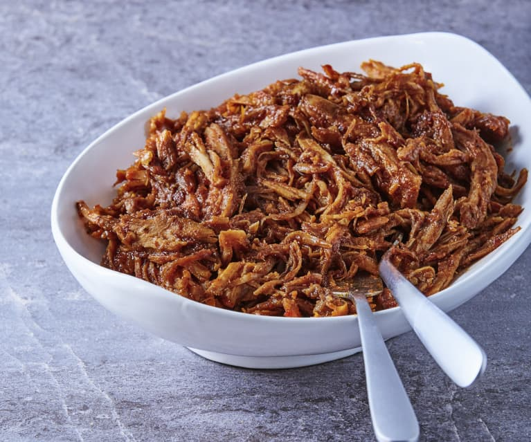

Bourbon Bacon Pulled Pork

Description
Easy slow cooker bourbon bacon pulled pork. Best enjoyed on a bun with buds in the backyard by the barbecue.
Ingredients
- 1 tsp garlic powder
- 1 tsp onion powder
- 1 tsp salt
- 1 tsp ground black pepper
- 2 pounds pork loin
- 1 cup packed brown sugar
- 1/2 cup bourbon
- 1/3 cup apple cider vinegar
- 8 slices cooked bacon, crumbled
Instructions
- Combine garlic powder, onion powder, salt, and pepper in a small bowl. Massage over all sides of pork loin for 1 minute. Place pork in a slow cooker.
- Mix brown sugar, bourbon, and apple cider vinegar together in a bowl and pour over pork loin. Close slow cooker.
- Cook on Low until pork is tender, 8 to 10 hours. Remove pork from slow cooker and shred with 2 forks. Mix with bacon.
- Enjoy with buds.